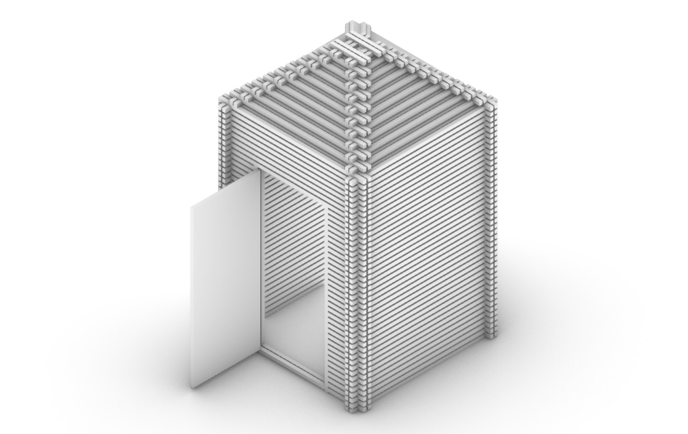
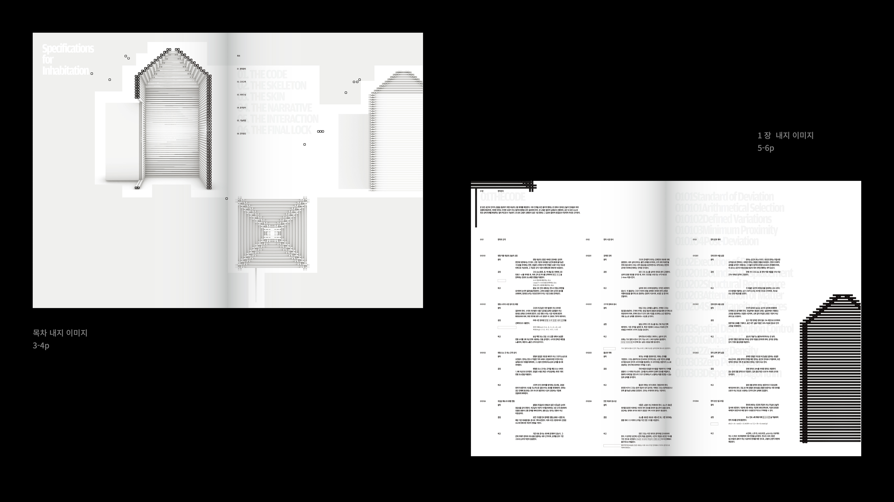
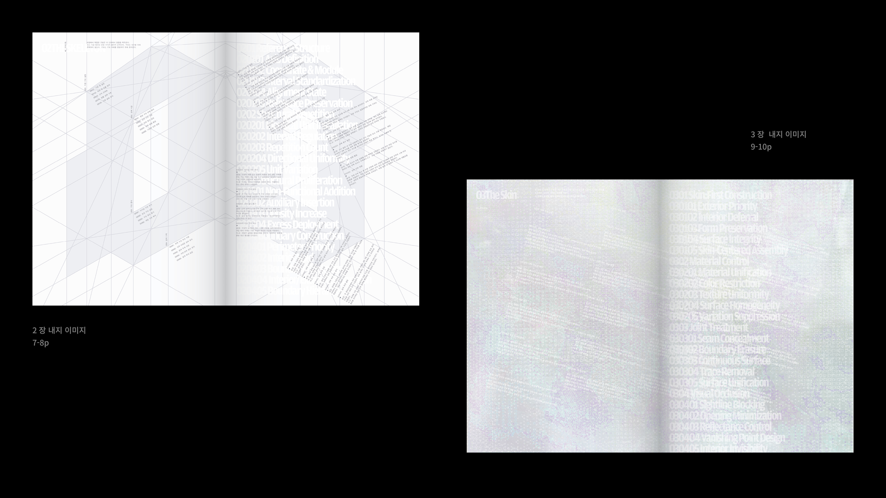
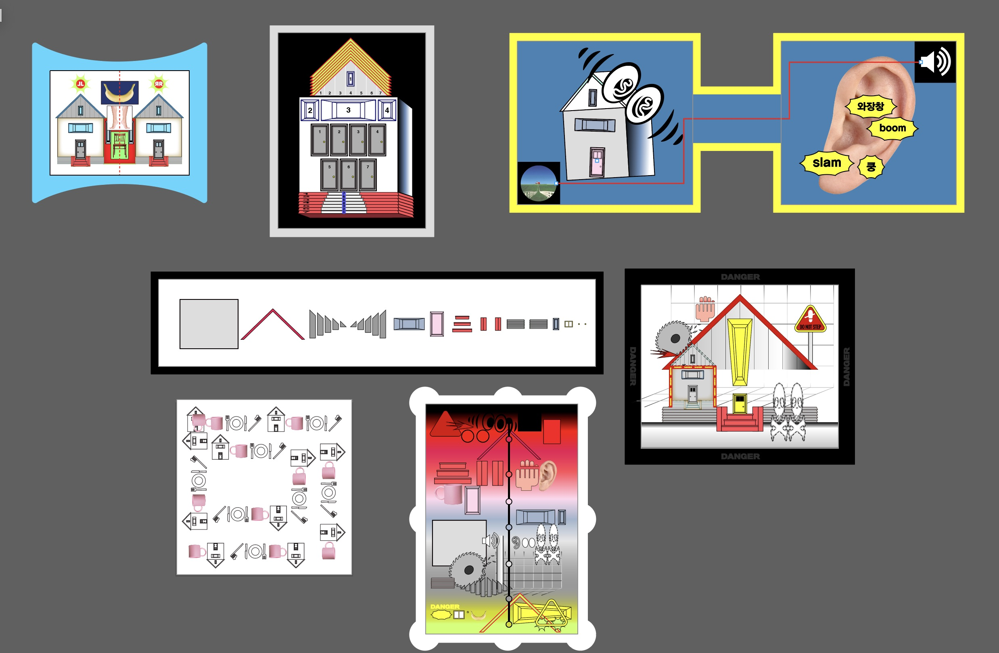
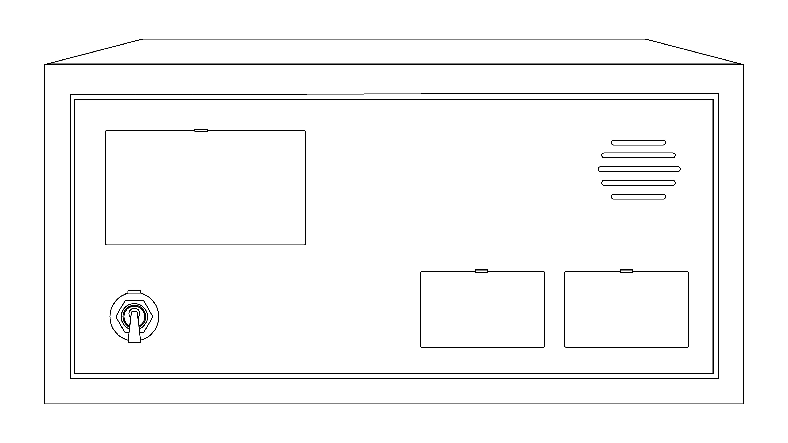
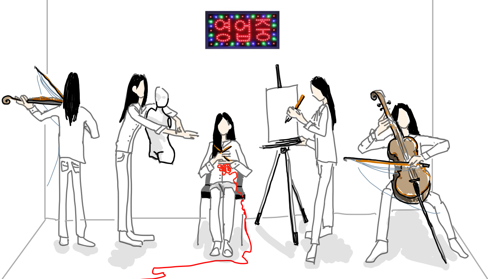

빈집 — 구조물
목재 결구 / 1200×1200×2700mm
사람 한 명이 들어갈 수 있는 규격. 안에서는 밖을 인지하고 소통할 수 있지만 닿을 수는 없다. 입구는 좁고 높으며, 들어서면 더 나아갈 공간 없이 가로막힌 벽을 마주한다. 검은 각목을 켜켜이 쌓아 무게감을 주는 동시에, 목재 사이로 희미한 빛이 스며들게 해 열망과 희망을 표현했다.

프로젝트는 ‘빈집’과 ‘털기’라는 두 단어 사이의 근본적 모순에서 시작한다. ‘털기’는 귀한 것을 얻기 위한 목적 있는 행위지만, ‘빈집’은 가져갈 것이 없는 텅 빈 상태를 뜻한다. 이미 비어 있음을 전제하는 공간에서조차 무언가를 찾아내려는 모순된 시도가 곧 제목이다.
아무것도 남지 않은 장소를 뒤지는 행위는 부재를 확인하는 과정이자, 의미 부여를 통해 부재를 가리려는 우리의 모습을 비유한다. 전시는 비어 있는 상태를 채워야 할 문제로 다루지 않는다. 우리는 비어 있음을 알면서도 반복하는 이 행위가 공허를 견디며 살아가기 위한 하나의 방식임을 제시한다.
A는 빈 집을 짓습니다.
B는 빈 집을 털러 갔습니다.
C는 여전히 빈 집에 있습니다.
D는 빈 집에서 나왔습니다.
빈집을 형상화한 구조물이 전시장 중앙에 놓이고, 작가들의 작품은 각자의 방식으로 빈집과 관계를 맺으며 그 안팎에 배치된다. 관람객은 빈집의 내외부를 오가며 A·B·C·D가 되어 작품을 경험한다.
사람 한 명이 들어갈 수 있는 규격. 안에서는 밖을 인지하고 소통할 수 있지만 닿을 수는 없다. 입구는 좁고 높으며, 들어서면 더 나아갈 공간 없이 가로막힌 벽을 마주한다. 검은 각목을 켜켜이 쌓아 무게감을 주는 동시에, 목재 사이로 희미한 빛이 스며들게 해 열망과 희망을 표현했다.


텅 빈 집과 공허한 본질을 감추기 위해 복잡하고 그럴싸한 지침서를 제작한다. 백과사전을 연상시키는 형태로 대단한 진리가 담긴 듯 보이지만, 속을 채운 것은 알맹이 없는 내용이다. 과잉된 체계가 정교할수록 빈집의 공허함은 더욱 철저히 가려진다.

허상의 의미를 강박을 통해 드러낸다. 집에서 털어낸 7가지 강박을 각각 두 장의 이미지(강박이 가득 찬 집 / 사라진 집)로 만들어 총 14점을 진열장에 전시한다. 소중한 것을 보관하는 진열장의 형식을 빌려, 붙들어온 대상이 본래 아무 의미도 없었음을 보여준다.

기억의 비지속성과 가변성을 탐구한다. 백색 화면에 일상의 장면이 쌓였다 사라지고, 사운드 오브제를 채널 돌리듯 조작하면 여러 국가의 라디오 사운드가 실시간으로 개입한다. 동일한 장면조차 현재의 조건에 의해 끊임없이 재구성됨을 감각하게 한다.

유한성을 정면으로 응시하며 집이라는 견고한 시스템에서 나와 해방된다. 영상 속 인물이 되어 연속적이고 무의미한 행위를 반복하고, ‘영업중’ 전광판을 통해 존재할 수밖에 없을 때 느끼는 권태(공허)를 객관적 텍스트로 송출한다. 공허는 빈 집을 나서도 지속되며 삶에 동반되는 것임을 보여준다.